El Space Invaders es un juego donde el jugador controla una nave que puede moverse a la derecha o izquierda y un dispara con el "Espacio".
Su objetivo es destruir filas de extraterrestres invasores que van acercándose cada vez más rápidamente a medida que el jugador va destruyendo
a los enemigos. Este ciclo se puede repetir en forma indefinida. También tiene una Nave Enemiga que se mueve continuamente.
Ambos Enemigos disparan.
Tenemos 3 paredes nos protegen y que tendrán vidas que se quitarán cuando los Enemigos lo den con sus balas.
La Nave también tendrá 3 vidas mientras que la Nave Enemiga tendrá 5 vidas.
La Nave se moveró con la flechas de izquierda y derecha.
Dispara con la tecla del Espacio y tendrá 3 vidas.
Si se queda sin vidas aparecerá la Escena de Game Over.
Los Enemigos aparecerán desde un lado de la escena y se moverán hacia al lado contrario e irán bajando un poco para a continuación ir
al otro extremo. Cuando lleguen a una determinada posición volverán a empezar desde donde comenzarón.
Tendrán 2 vidas y cambiaremos su animación.
Disparán de vez en cuando hacia abajo.
Cada vez que se elimina un Enemigo el cambio de animación ira más rápida.
Se moverá de derecha a izquierda continuamente.
Dispará de vez en cuando a donde este nuestra nave.
Tendrá 5 vidas. Y cambiara de disfraz cada vez que la bala de la Nave le de.
Para comenzar el juego.
Pondremos 3 paredes y cada una de ellas tendrá 3 vidas con sus correspondientes Sprites.
Solo se destruyen cuando le da cualquiera de las balas de los Enemigos ó de la Nave Enemiga.
Es una entidad que solo se mostrara cuando no quedemos sin vidas, cuando no tengamos enemigos ó cuando la Nave Enemiga no tenga vidas.
Aparecerá al comenzar el juego junto al botón del Play.
Dispararemos con la tecla "Espacio".
Podemos destruir los Enemigos, Nave Enemiga e incluso la bala de los enemigos si se chocan entre ellas.
Aparecerán de vez en cuando al cabo de unos segundos. Apuntará hacia abajo.
Destruira las Paredes, las balas y la Nave Player.
Aparecerán de vez en cuando al cabo de unos segundos. Pero ira hacia donde este situada la Nave Player.
Destruira las Paredes, las balas y la Nave Player.
Son 3 Objetos que tenemos que poner en la Escena. Cada vez que disparen las balas a la Nave desaparecedrá uno de los Sprites.
Ponemos un Fondo que estárá moviendose continuamente en Vertical hacia arriba.
Haremos conductas BehaviourNave, BehaviourEnemigos, BehaviourNaveEnemiga, BehaviourCrearBalaNave, BehaviourCrearBalaEnemigo, BehaviourCrearBalaNaveEnemiga.
Hacemos una Escena que se llame "Escena Play". Tamaño de 640x480 (el que viene por defecto).
Añadimos el Fondo en Central del juego/Fondos y lo llamaremos Fondo.
Tendrá un desplazamiento hacia abajo con una velocidad de 5 y se repetira continuamente.
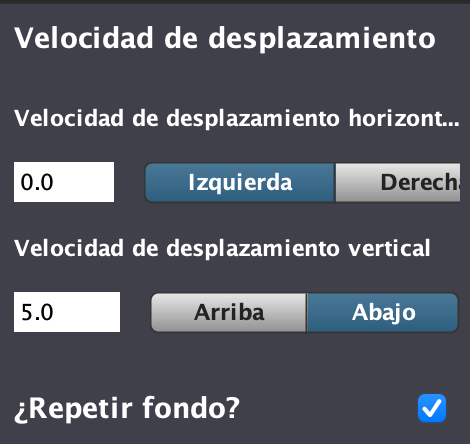
Cuando terminemos el juego haremos la Escena de presentación y la Escena de Game Over.
Una vez que tenemos el fondo creamos una nueva capa a nuestra Escena Play y le lo añadimos el Fondo que hemos creado.
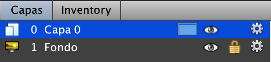
Creamos una nueva Entidad llamada "Nave Player". El Sprite "Nave Player.png" será a escala 1 y en Columna y Fila pondremos 2.
Tendrá una colisión y una Física:
- No se puede empujar. Para que cuando nos de una bala no se desplace.
- No podrá rotar.
- El resto de las opciones se quedan como están.
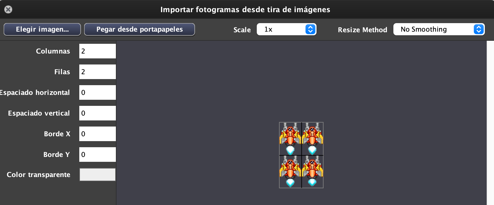
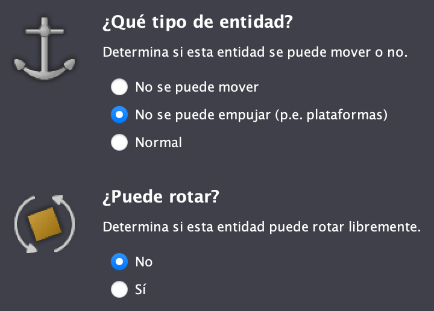
Y pertenecera al Grupo de Colisión de Players.
Los Players colisionarán con:
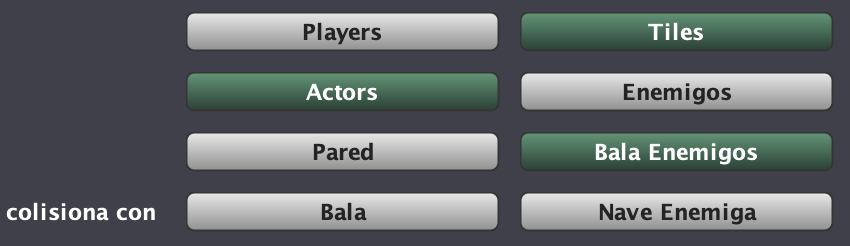
Los Actors será el botón del Play. Y la Bala Enemigos serán tanto la Bala del Enemigo como de la Bala de la Nave Enemiga.
Crearemos un Behaviour de Entidades para el movimiento de la nave, el disparo y para recoger coninuamente la posición de la Nave en atributos del
juego (global).
Evento Keyboard: Si la flecha izquierda está presionada haremos un x-speed con un valor y si no está presionada la pondremos a 0.
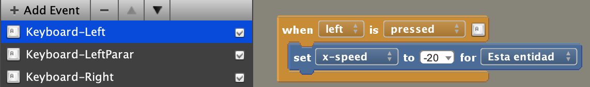
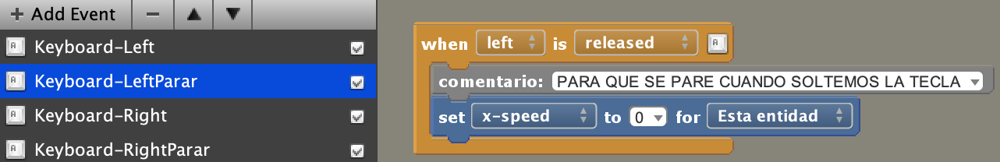
Hacer lo mismo para la flecha derecha.
Tenemos que controlar que no se sobrepase por los lados quitando la velocidad cuando sobrepasemos una determinada posición.
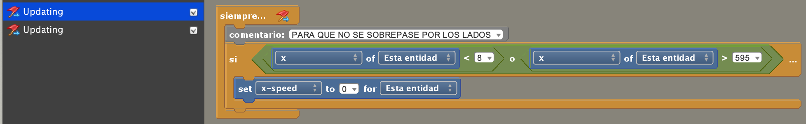
Y recogemos continuamente las posiciones de la Nave en unos atributos del juego (global) para que cuando dispare la Nave Enemiga sepa a donde tiene que ir la bala que le dispara.
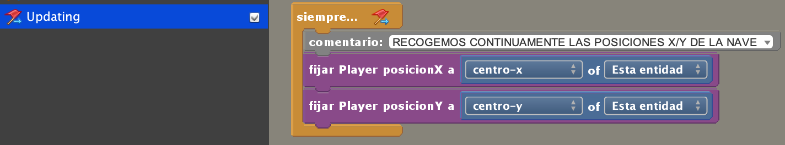
Faltaría hacer el disparo que lo incluiremos cuando hagamos la bala que tiene que disparar. Y el cambio de escenario a Game Over cuando no tengamos vidas.
Creamos una nueva Entidad llamada "Bala Nave Player". El Sprite "Bala Player.png" será a escala 1 y en Columna y Fila pondremos 2.
- Se crea una animación con 4 frames. La última no tiene nada asi que habrá que eliminarla.
Tendrá una colisión y una Física:
- Normal.
- No podrá rotar y no está afectado por la gravedad.
- El resto de las opciones se quedan como están.
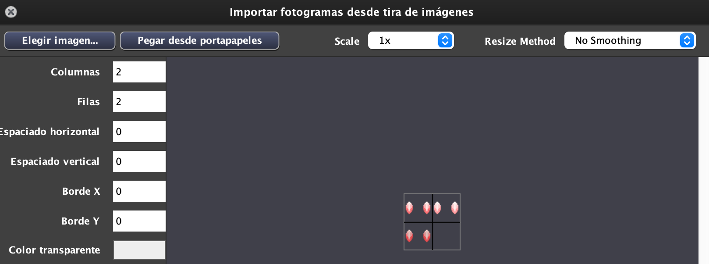
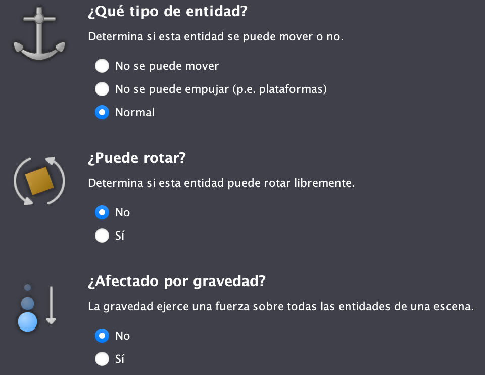
Y pertenecera al Grupo de Colisión de Bala.
La Bala colisionarán con:
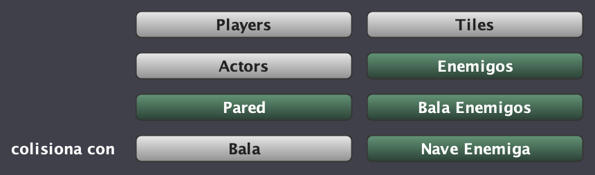
El grupo de colisión Bala Enemigos será el mismo para los dos enemigos. Y el resto de las colisiones es obvio.
Las colisiones de las balas de las distintas entidades se han hecho dentro de cada entidad pero no están incluidas en los Behaviour ya que no funcionaban correctamente.
Tendremos 5 Eventos:
- Evento Enter Screen: Cuando la bala se salga de la pantalla se destruye.
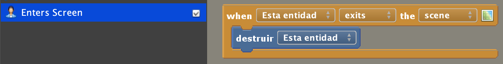
- Evento Actor - Group - Pared: Cuando la bala se choca con la Pared también se destruye (en la Pared tenemos que hacer algo más).
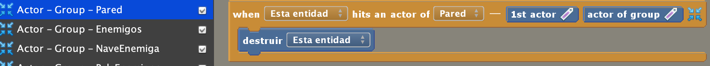
- Evento Actor - Group - Enemigos: Cuando la bala se choca con los Enemigos se destruye la bala pero haremos que mande un mensaje al Enemigo para que cambie de disfraz y le quite vidas (lo haremos más adelante).
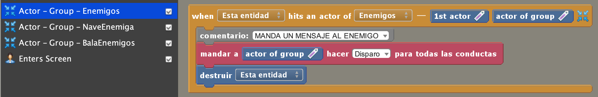
- Evento Actor - Group - NaveEnemiga: Cuando la bala se choca con la Nave Enemiga se destruye la bala pero haremos que mande un mensaje a la Nave Enemiga para que cambie de disfraz y le quite vidas (lo haremos más adelante).
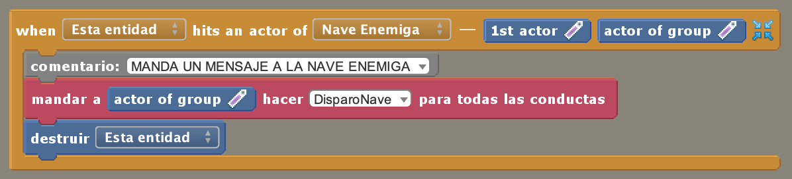
- Evento Actor - Group - BalaEnemigos: Cuando la bala se choca con las Balas del Enemigo o con las Balas de la Nave Enemiga se destruyen ambas balas.
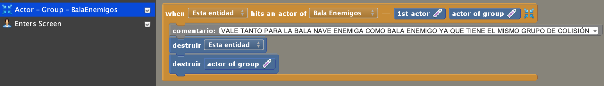
Una vez que tenemos la Bala de la Nave ya podemos continuar con el Disparo. Asi que vamos al BehaviourNave.
Nos faltaria añadir un Evento para el disparo de la Nave Player:
- Evento Keyboard-Disparo: Cuando pulsemos el espacio crearemos la Bala Nave, la movemos y mandaremos un mensaje
para que suene un sonido.

El mensaje de "SonidoDisparo" estará en un Behaviour Sonidos de tipo Escenario. Ahi tendremos algunos de los Sonidos que tenemos en canales
distintos:
- Sonido Disparo: Sonido del disparo de la Bala de la Nave.
- Sonido Disparo Enemigos: Sonido disparo de la Bala de los Enemigos a la Nave Player.
- Sonido Quitar Vidas Nave
- Sonido Disparo a Enemigos: Sonido cuando quita vidas a los Enemigos o a la NAve Enemiga.
- Sonido Romper Pared: Sonido cuando las balas le quitan las vidas a la Pared. Solo serán las Balas de Enemigos y de la Nave Enemiga.

Tenemos otros 2 Sonidos más:
- Sonido Nave Enemiga: Que estárá sonando continuamente en la Nave Enemiga.
- Sonido Fondo: Que estará sonando continuamente al empezar en la Escena Inicio.
Creamos una nueva Entidad llamada "Enemigo". El Sprite "Alien.png" será a escala 1 y en Columna 2 y Fila pondremos 1. Que será el que este por defecto.
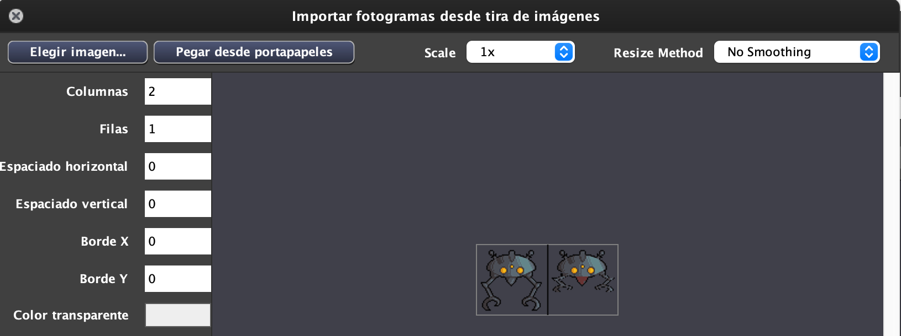
Tendremos que incluir otros 2 Sprites más de las vidas "Alien Vida1" y "Alien Vida2" escala 1 y Columna y Fila 1.
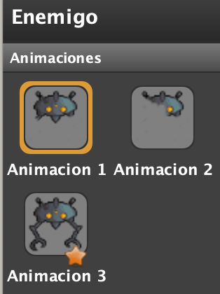
Tendrá una colisión y una Física:
- No se puede empujar.
- No podrá rotar.
- El resto de las opciones se quedan como están.
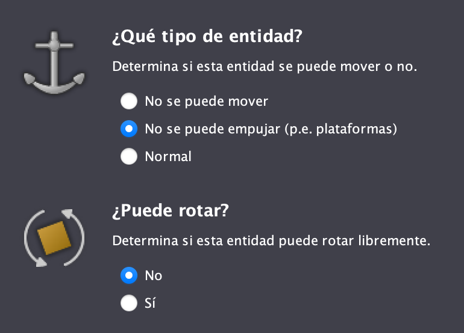
Y pertenecera al Grupo de Colisión de Enemigos.
El Enemigo colisionarán con:
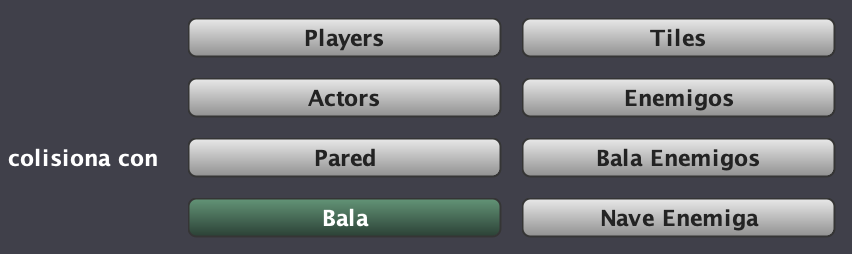
El grupo de colisión Bala pertenecerá a la Bala de la Nave Player.
Los Enemigos saldrán cada cierto nº de segundos en la Escena Play y pondremos un limite de Enemigos mediante un atributo del juego
llamado "Total Enemigos" que lo inicializaremos en el Evento Create de la Escena Play.
Iremos sumando otro atributo del juego "Enemigos" y pararemos de crear cuando lleguemos a ese Total Enemigos.
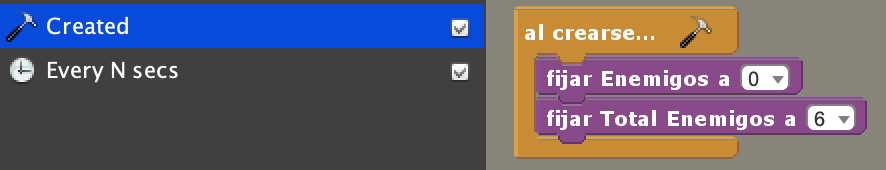
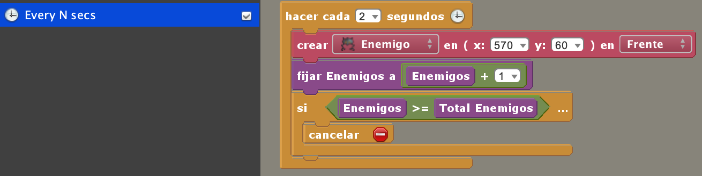
El Enemigo tendrá dos Behaviour: BehaviourEnemigos y BehaviourCrearBalaEnemigo.
Se encargara del movimiento y de ir cargando la velocidad de los disfraces cada vez que se elimine uno. Necesitamos 3 Eventos:
- Evento Created: Necesitamos un atributo "derecha" booleano para ir controlando la dirección del Enemigo.
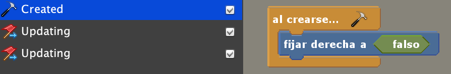
- Evento Update: Si la animación es "Animacion 3" cambiaremos la velocidad del frame con un atributo del juego. Ese atributo se modifica en el "Enemigo". (lo veremos mñás adelante).
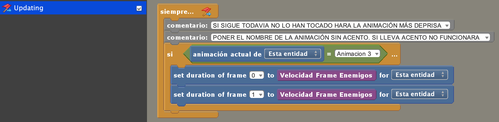
Cuidado con NO poner acentos en las Animaciones si queremos hacer alguna referencia a ellas.
- Evento Update: Haremos el movimiento de los Enemigos.
- Van a derecha o izquierda dependiendo del atributo "derecha".
- Cuando llegan a una determinada posición en X (X<=10 lado izquierdo) bajan un poco (Y) en diagonal (X).
- Cuando pasan 0.3 segundos se parán un poco y continuan moviendose.
- Cuando llegan a a una determinada posición en X (X>=575 lado derecho) bajan un poco (Y) en diagonal (X).
- Cuando pasan 0.3 segundos se parán un poco y continuan moviendose.
- Y si llegamos a una X>= 575 y Y = > 275 volverá a subir a su posición inicial de donde empezarón para que comience de nuevo
su movimiento.
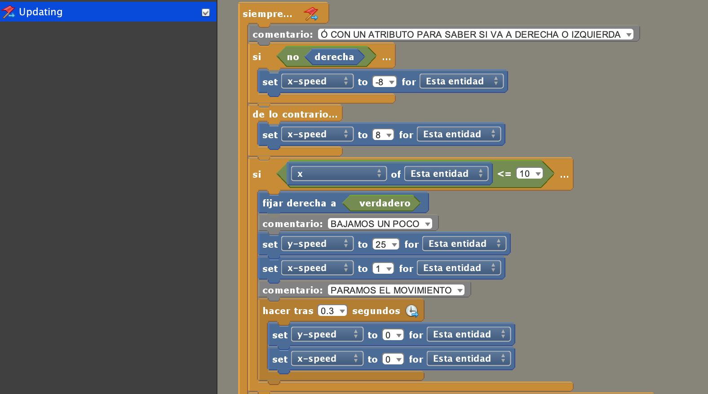
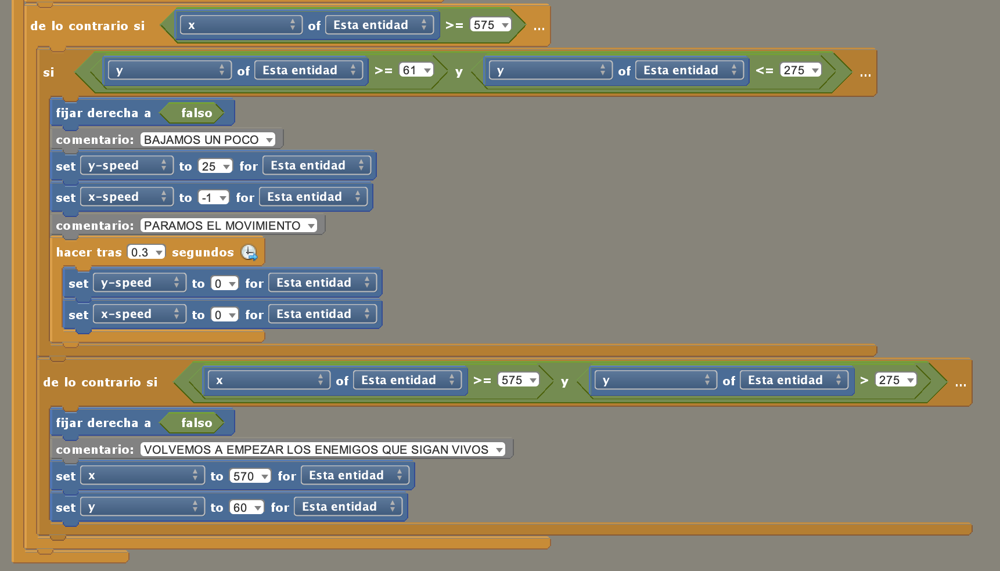
El Enemigo tendrá 2 eventos:
- Evento Created: Tenemos un atributo "Vidas Enemigo" para saber cuantas vidas tiene el Enemigo.
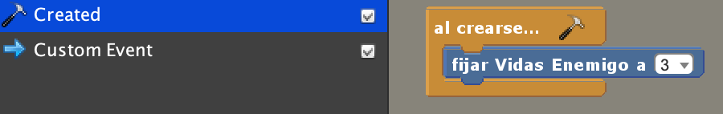
- Evento Custom Event: Mensaje "Disparo". Se llama desde la Bala Nave Player cuando da al Enemigo.
- Resta vida del Enemigo.
- Sonara un sonido que estará en el Behaviour Sonidos.
- Dependiendo de la vida le cambiara la animación ó se destruira si ya no tiene vidas.
- Tendremos un atributo del Juego para ir restando Enemigos y otro para restar el Total de Enemigos que nos quedán..
- Si se destruye un enemigo cambiamos la Velocidad del Frame del resto si la animación es la que tiene 2 disfraces. Pero
con un limite de velocidad.
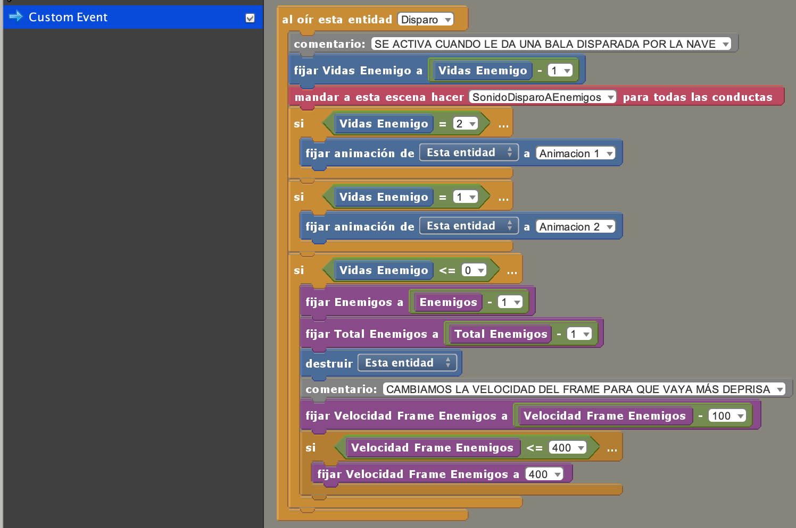
Creamos una nueva Entidad llamada "Bala Enemigo". El Sprite "Bala Enemigo.png" será a escala 1 y en Columna y Fila pondremos 2.
- Se crea una animación con 4 frames. La última no tiene nada asi que habrá que eliminarla.
Tendrá una colisión y una Física:
- Normal.
- No podrá rotar y no está afectado por la gravedad.
- El resto de las opciones se quedan como están.
Y pertenecera al Grupo de Colisión de Bala Enemigos.
La Bala colisionarán con:
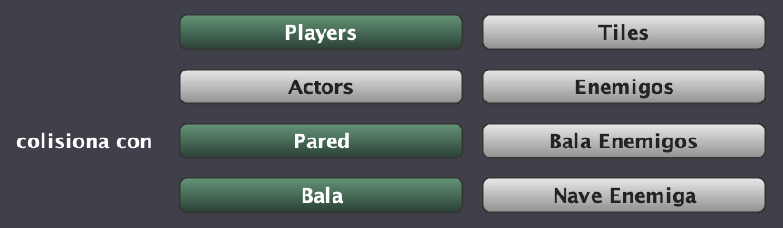
Tendremos 2 Eventos:
- Evento Actor-Group-Nave: Le quito vida a la Nave, hacemos un sonido y destruimos la bala.
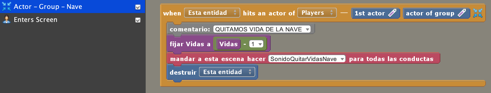
- Evento Enters Screen: Si la bala sale de la escena se destruye. Tenemos que hacerlo en el Evento ya que en el BehaviourCrearBalaEnemigo NO funciona.
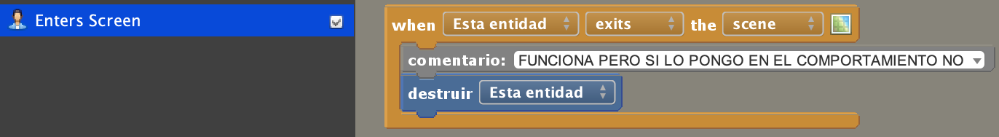
Este Behaviour estará en la entidad de Enemigo ya que asi sabemos su posición continuamente de cada uno.
Creamos la Bala Enemigo cada cierto tiempo, ponemos un sonido y la lanzamos con el bloque de presionar como todas las balas.
Hacia abajo y con una fuerza.
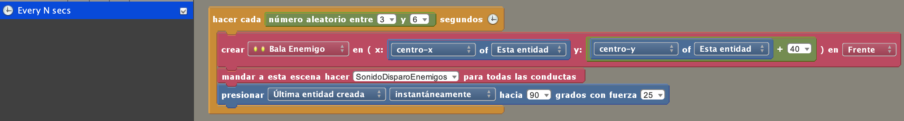
Creamos una nueva Entidad llamada "Nave Enemiga". El Sprite "Nave Enemiga.png" será a escala 1 y en Columna y Fila pondremos 1.
Para las vidas tenemos que incluir más Sprites: "Nave Enemiga 1.png", "Nave Enemiga 2.png", "Nave Enemiga 3.png" y "Nave Enemiga 4.png".
Tendrá una colisión y una Física:
- No se puede empujar.
- No podrá rotar..
- El resto de las opciones se quedan como están.
Y pertenecera al Grupo de Colisión de Nave Enemiga.
La Nave Enemiga colisionarán con la Bala de la Nave:
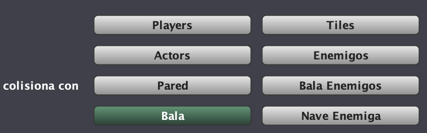
La Nave Enemiga tendrá dos Behaviour: BehaviourNaveEnemiga y BehaviourCrearBalaNaveEnemiga.
Se encargara del movimiento de un lado a otro y cuando llega a una determinada posición cambia de dirección. Necesitamos 2 Eventos:
- Evento Created: Ponemos la x-speed para que comience a ir hacia la izquierda.
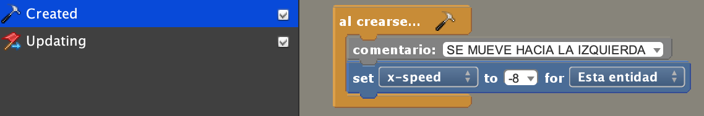
- Event Update: Cuando llegue a una posicón determinada se ha hacia la dirección contraria.
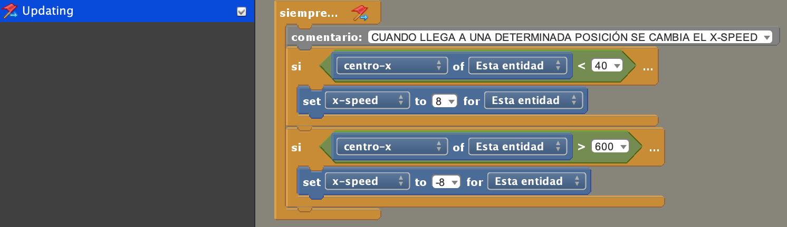
Este Behaviour estará en la entidad de Nave Enemiga ya que asi sabemos su posición.
Creamos la Bala Nave Enemiga cada cierto tiempo, ponemos un sonido y la lanzamos con el bloque de presionar como todas las balas.
Hacia abajo y con una fuerza pero tenemos que usar un nuevo bloque "atan2" para que vaya hacia donde este nuestra nave.
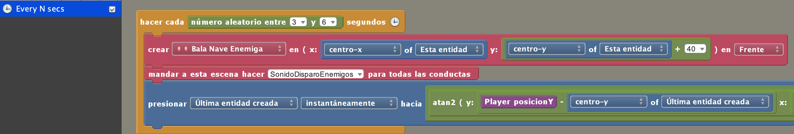
Voy a descomponer el bloque del presionar para que se vea más claro.
Lo vamos componiendo de abajo hacia arriba. El bloque de la Y dentro de "y:" y el bloque de la X dentro de "x:"
Podemos observar que hay dos atributos del Juego "Player posicionX" y "Player posicionY" donde se guardara continuamente la
posición de la Nave.
El bloque "atan2" se mete dentro del bloque de "degrees". Y este bloque dentro de "hacia".

La Nave Enemiga tendrá 2 eventos:
- Evento Created: Tenemos un atributo "Vidas Nave Enemiga" para saber cuantas vidas tiene la Nave Enemiga. Y estárá continuamente
haciendo un Sonido
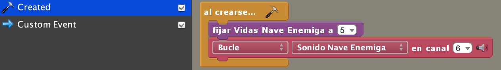
- Evento Custom Event: Mensaje "DisparoNave". Se llama desde la Bala Nave Player cuando da a la Nave Enemiga.
- Resta vida a la Nave Enemiga.
- Sonara un sonido que estará en el Behaviour Sonidos.
- Dependiendo de la vida le cambiara la animación ó se destruira si ya no tiene vidas.
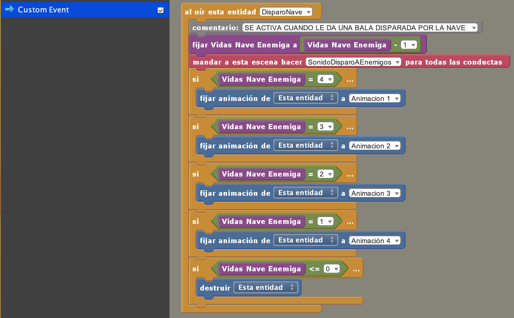
La Nave Player tendrá 1 eventos:
- Evento Update: Cuando no tenga más vidas aparecerá otro Escenario de "Game Over".
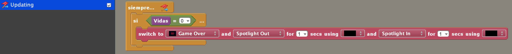
Creamos una nueva Entidad llamada "Pared"1. El Sprite "Pared.png" será a escala 1 y en Columna y Fila pondremos 1.
Para las vidas tenemos que incluir más Sprites: "Pared1.png" y "Pared2.png".
Tendrá una colisión y una Física:
- No se puede mover.
- El resto de las opciones se quedan como están.
Y pertenecera al Grupo de Colisión de Pared.
La Pared colisionará con:
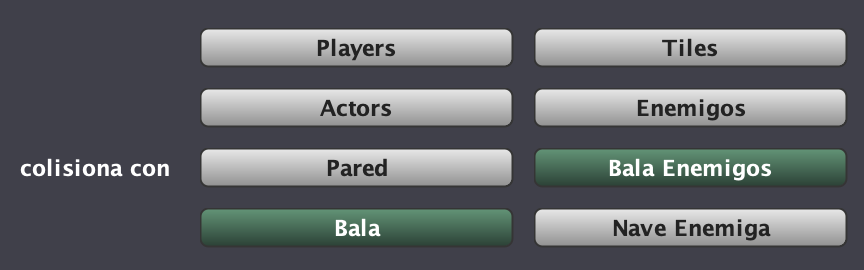
La Pared tendrá 3 eventos:
- Evento Created: Tenemos un atributo "Vidas Muro" para saber cuantas vidas tiene la Pared.
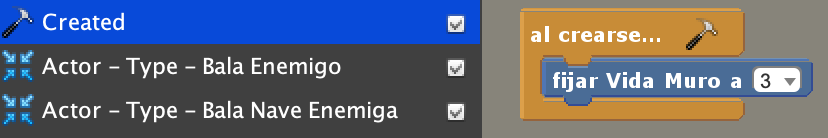
- Evento Actor - Type - Bala Enemigo: Le restará 1 vida a la Pared. Ha que un Sonido que estará en el BehaviourSonidos. Y si ya no tiene vidas se destruye la Pared. También se destruye la bala que le ha dado.
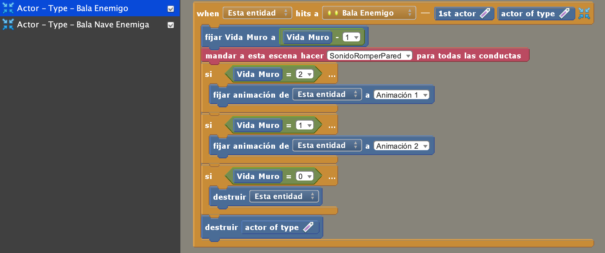
- Evento Actor - Type - Bala Nave Enemiga: Le restará 1 vida a la Pared. Ha que un Sonido que estará en el BehaviourSonidos. Y si ya no tiene vidas se destruye la Pared. También se destruye la bala que le ha dado.
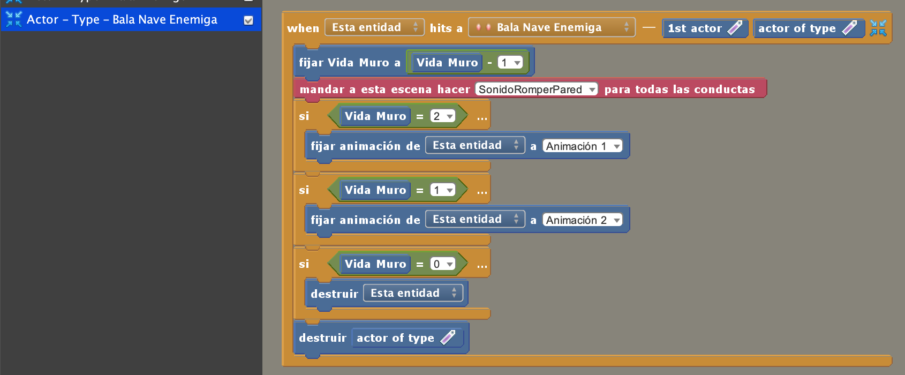
Creamos una nueva Entidad llamada "Vida1", "Vida2" y "Vida3". El Sprite "Vida.png" será a escala 1 y en Columna y Fila pondremos 1.
No tendrá una colisión y una Física:
- No se puede mover.
- El resto de las opciones se quedan como están.
La Vida1 tendrá 2 eventos:
- Evento Created: Inicializamos un Atributo del Juego "Vidas" a 3. Solo lo tendrá este evento la entidad Vida1.
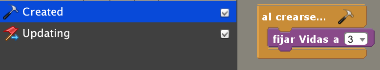
- Updating: Si la Vida es 0 se destruye la entidad.
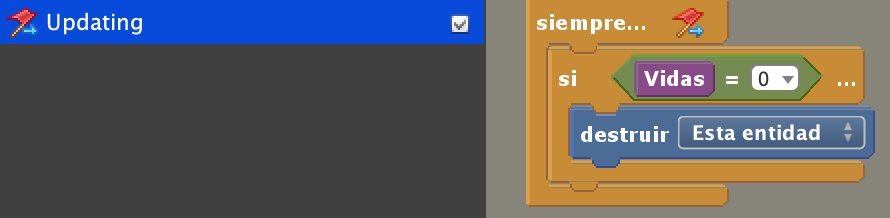
La entidades de Vidas las pondremos en orden en la Escena como Vida1, Vida2 y Vida3. Y en Vida2 preguntamos por vida = 1 y en Vida2 por vida = 2.
En esta escena nos faltaria añadir un nuevo Evento.
- Evento Updating: Para controlar que si no tenemos Enemigos y la NAve Enemiga ya no tiene vidas que aparezca la Escena
"Game Over".
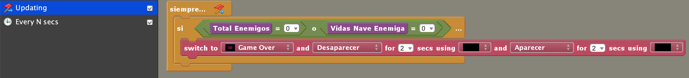